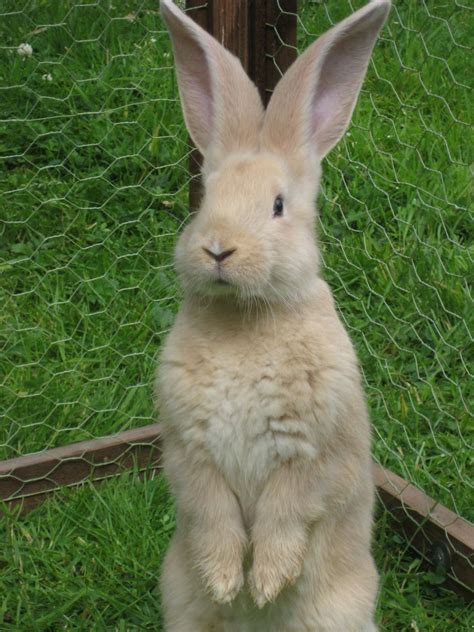

About Rabbits
Rabbits (also known as bunnies, bunsters, or bunny rabbits) are amazing creatures with a lot of fluff on them
Cute white rabbit
Rabbit breeds
Rabbits come in all sorts of sizes, colours, and regional variations. Here's a few examples of rabbit breeds:
- Dutch Rabbit
- Lionhead
- Angora
Rabbits' diet
Rabbits are full-on crudist vegans. Their diet is made up of hay (80%) and vegetables (20%). Click here for a list of food that's safe for rabbits.